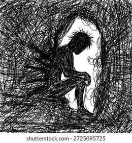
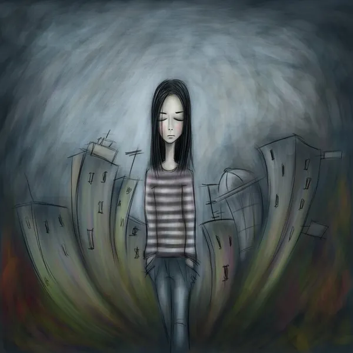
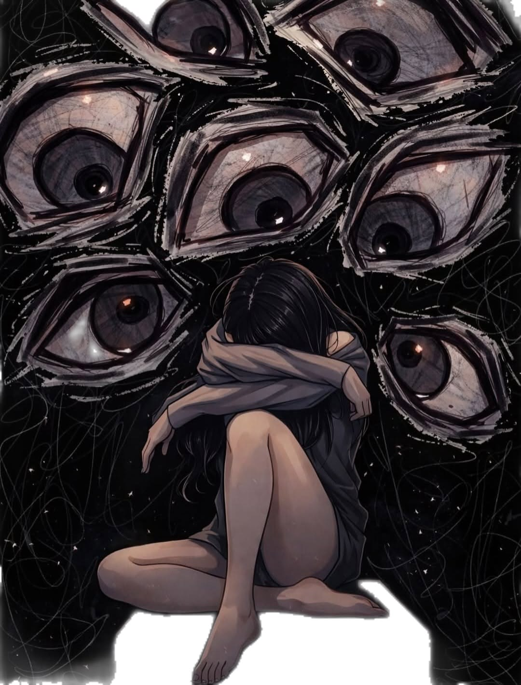

𝕯𝖊𝖕𝖗𝖊𝖘𝖎ó𝖓
¿Qué es la depresión?
La depresión es un trastorno mental caracterizado por un estado de ánimo deprimido o por una pérdida importante del interés o del placer en las actividades. Puede afectar los pensamientos, las emociones, el comportamiento, las relaciones personales y el desempeño escolar o laboral.
Una persona con depresión puede sentirse triste, vacía, desesperanzada o sin energía. También puede perder el interés por actividades que antes disfrutaba, tener dificultades para concentrarse o experimentar sentimientos intensos de culpa.
Es importante distinguir la depresión de la tristeza cotidiana. La tristeza suele aparecer como respuesta a una situación determinada y puede disminuir con el tiempo. La depresión, en cambio, suele ser más persistente y puede afectar diferentes aspectos de la vida, incluso cuando no existe una causa evidente.
La depresión no afecta a todas las personas de la misma manera. Algunas pueden mostrar tristeza evidente, mientras que otras experimentan irritabilidad, aislamiento, agotamiento o dificultades para realizar actividades sencillas.
Además, no es necesario que una persona presente todos los síntomas para necesitar ayuda. Cuando los cambios emocionales persisten o interfieren con la vida cotidiana, es importante consultar a un profesional de la salud.

La depresión es un trastorno de salud mental que afecta la manera en que una persona piensa, siente y actúa. Puede provocar tristeza persistente, pérdida de interés en las actividades cotidianas, cansancio, dificultades para dormir y problemas de concentración. A diferencia de la tristeza que experimentamos ante situaciones difíciles, la depresión puede durar semanas o meses e interferir considerablemente en la vida diaria.
En la actualidad, la depresión representa un importante problema de salud pública, ya que puede afectar a personas de cualquier edad, género o condición social. Aunque existen muchos mitos sobre este trastorno, es importante comprender que no se trata de una falta de voluntad, una debilidad personal ni algo que pueda superarse simplemente con pensar positivamente.
La depresión puede tener diferentes causas y manifestaciones, pero existen tratamientos y apoyos que ayudan a las personas a mejorar. Por esta razón, es fundamental reconocer sus síntomas, buscar ayuda profesional cuando sea necesario y promover una sociedad en la que se pueda hablar de la salud mental sin miedo a ser juzgado.
Causas de la depresión
La depresión no tiene una única causa. Generalmente, aparece por la interacción de diferentes factores biológicos, psicológicos y sociales.
Entre los principales factores relacionados con su aparición se encuentran:
- Factores biológicos: la genética, determinadas condiciones médicas y algunos procesos relacionados con el funcionamiento del cerebro pueden influir en el riesgo de desarrollar depresión.
- Factores psicológicos: la baja autoestima, las experiencias traumáticas, la dificultad para afrontar situaciones estresantes y ciertos patrones de pensamiento pueden contribuir a su aparición.
- Factores sociales: los conflictos familiares, el aislamiento, el acoso escolar, la violencia, las dificultades económicas y los problemas laborales pueden aumentar el riesgo.
- Experiencias difíciles: la pérdida de un ser querido, una separación, una enfermedad o un acontecimiento traumático pueden desencadenar síntomas depresivos en algunas personas.
- Consumo de sustancias: el alcohol y otras sustancias pueden empeorar los síntomas o aumentar el riesgo de problemas de salud mental.
- Condiciones médicas: algunas enfermedades y determinados medicamentos pueden contribuir a síntomas similares a los de la depresión.
Tener uno de estos factores no significa que una persona necesariamente desarrollará depresión. Del mismo modo, una persona puede experimentar depresión sin identificar una causa específica.
Es importante comprender que la depresión no es culpa de quien la padece. Se trata de una condición compleja que merece comprensión, atención y tratamiento adecuado.
Principales síntomas de la depresión
Los síntomas de la depresión pueden variar según la persona y la gravedad del trastorno. Entre los más comunes se encuentran:
- Tristeza persistente, sensación de vacío o desesperanza.
- Pérdida de interés o placer en actividades que antes resultaban agradables.
- Cansancio constante o falta de energía.
- Dificultades para dormir o dormir demasiado.
- Cambios en el apetito o en el peso.
- Problemas para concentrarse, recordar información o tomar decisiones.
- Sentimientos excesivos de culpa, inutilidad o fracaso.
- Irritabilidad o inquietud.
- Aislamiento social y dificultad para relacionarse con otras personas.
- Pensamientos relacionados con la muerte o el suicidio en algunos casos.
Los síntomas pueden afectar la capacidad para estudiar, trabajar, cuidar de uno mismo o mantener relaciones personales.
No todas las personas presentan las mismas manifestaciones. Por ejemplo, algunos adolescentes pueden mostrar irritabilidad, aislamiento o una disminución del rendimiento escolar, en lugar de expresar claramente que se sienten tristes.
La presencia de síntomas no confirma por sí sola un diagnóstico. Sin embargo, si persisten durante varias semanas, especialmente durante dos semanas o más, o afectan significativamente la vida diaria, es recomendable buscar una evaluación profesional.

Historia de la depresión
La depresión ha sido descrita desde la antigüedad. En la medicina griega, Hipócrates utilizó el término melancolía para describir estados prolongados de tristeza y sufrimiento emocional. En aquella época, se intentaba explicar estos estados mediante teorías médicas que hoy se consideran obsoletas.
Durante siglos, las explicaciones sobre la depresión estuvieron relacionadas con creencias filosóficas, religiosas y médicas. Con el desarrollo de la medicina moderna, comenzaron a estudiarse de manera más sistemática los síntomas, las causas y los tratamientos de los trastornos del estado de ánimo.
Durante los siglos XIX y XX, la psiquiatría desarrolló clasificaciones más precisas para distinguir la depresión de otras condiciones. Posteriormente, los avances en psicología, neurociencia y farmacología permitieron comprender mejor los factores biológicos, psicológicos y sociales que pueden intervenir en su aparición.
Actualmente, la depresión se reconoce como una condición de salud que requiere atención científica y profesional. Los tratamientos modernos incluyen psicoterapia, medicamentos cuando están indicados y diferentes formas de apoyo social y familiar.

Tipos de depresión
Existen diferentes formas de depresión. Su clasificación depende de los síntomas, su duración, su intensidad y la historia clínica de la persona.
Trastorno depresivo mayor
Se caracteriza por síntomas depresivos que afectan considerablemente la vida cotidiana. Puede incluir tristeza persistente, pérdida de interés, cambios en el sueño y el apetito, cansancio y sentimientos de desesperanza.
Trastorno depresivo persistente
También conocido como distimia, consiste en un estado de ánimo deprimido de larga duración. En adultos suele mantenerse durante al menos dos años, aunque los síntomas pueden variar en intensidad.
Depresión posparto
Puede aparecer después del nacimiento de un bebé. Incluye síntomas que van más allá de la tristeza pasajera que algunas personas experimentan durante los primeros días después del parto. Puede afectar el bienestar de la madre o del progenitor que la experimenta y requiere atención profesional.
Trastorno disfórico premenstrual
Es una condición relacionada con el ciclo menstrual que provoca síntomas emocionales y físicos intensos antes de la menstruación, los cuales pueden interferir con las actividades cotidianas.
Depresión con patrón estacional
En algunas personas, los síntomas depresivos aparecen en determinadas épocas del año y mejoran en otras. Este patrón puede estar relacionado con cambios estacionales y en la exposición a la luz.
Es importante señalar que estos tipos no son equivalentes y que solo un profesional puede determinar qué diagnóstico corresponde a cada persona.
Conclusión
La depresión es un trastorno de salud mental que puede afectar profundamente las emociones, los pensamientos, el comportamiento y las actividades cotidianas de una persona. No debe confundirse con la tristeza pasajera ni considerarse una señal de debilidad, ya que puede tener causas biológicas, psicológicas y sociales.
Reconocer sus síntomas es fundamental para buscar ayuda de manera oportuna. La psicoterapia, los medicamentos cuando están indicados, el apoyo social y los hábitos saludables pueden contribuir a la recuperación, dependiendo de las necesidades de cada persona.
La familia, los amigos, las escuelas, los profesionales de la salud y las instituciones tienen un papel importante en la prevención, la detección y la atención de la depresión. Escuchar sin juzgar, evitar los prejuicios y facilitar el acceso a servicios profesionales son acciones que pueden marcar una diferencia importante.
En conclusión, la depresión es una condición que merece comprensión, respeto y atención. Hablar de salud mental ayuda a romper el silencio, combatir la discriminación y recordar que pedir ayuda es un paso importante para recuperar el bienestar y mejorar la calidad de vida.
- Organización Mundial de la Salud (OMS). Depresión. https://www.who.int/es/news-room/fact-sheets/detail/depression
- National Institute of Mental Health (NIMH). Depresión. https://www.nimh.nih.gov/health/topics/depression
- MedlinePlus. Depresión. https://medlineplus.gov/spanish/depression.html